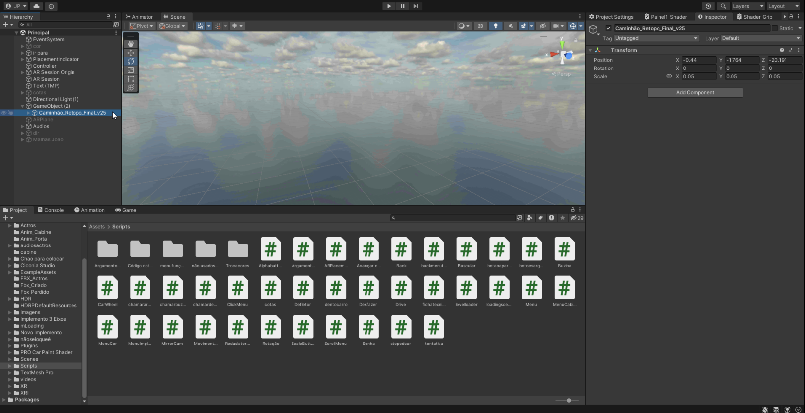
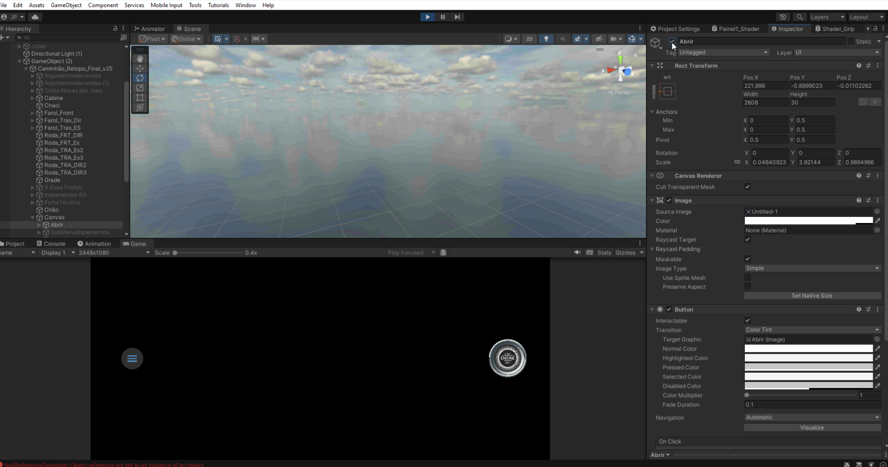

Como achar o que procura na gameview
Quando você quiser escolher uma cena para ver como estão posicinados
os botões, os objetos 3d, você pode abrir a hierarquia ao lado da
gameview
e selecionar com um clique do mouse e depois pode apertar a tecla F
duas vezes que vc vai ser levado até o que procura, no caso da tela
Principal,
você será levado ao caminhão

O princípio do Build Settings quando passa pro celular colocando as
cenas em ordem se aplicam na game view é preciso deixa-las em ordem
ante de dar play em
qualquer cena, caso de play na cena "Principal", a tela sempre será
escura, pois ele vai estar procurando uma camera AR, ou abrirá a
camera do notebook ou
uma web cam, caso a unity o reconheça ,
ele pede um chão para o colocar o objeto para poder começar a aparecer
os botões, como é no celular.
Porém existe uma forma de burlar isso, ao abrir a hierarquia assim
como na imagem e achar o botão nomeado "Abrir", ao torna-lo visível, a
sua tela "Game", ficará
igual a da imagem, porém quando você aproximar a sua viewpoert do
caminhão, ele funcionará tudo de forma perfeita, as trocas de cores,
cotas, abrir porta, bascular.
Só não irá andar pois ele precisa estar no chão para se movimentar,
então ele só girará as rodas neste modo.

Detalhe Importante
Todas as alterações feitas enquanto está no modo de jogo o "Play", ao
sair deste modo elas são todas desfeitas automaticamente, remover
partes 3d
remover código, apagar botões, ao sair do "Play", tudo isso é desfeito
por exemplo